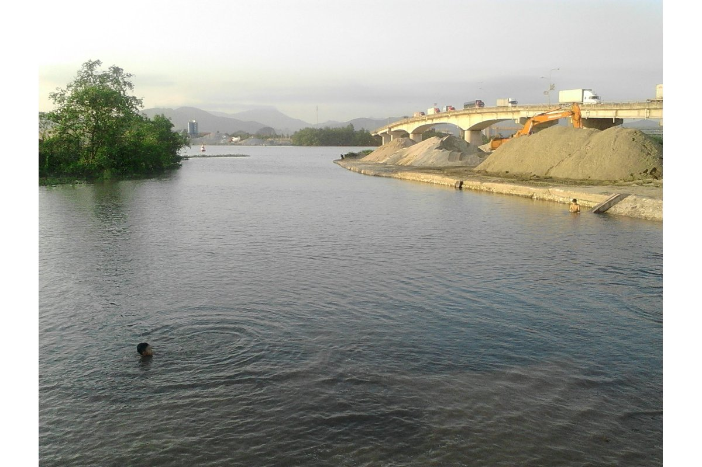

Dòng Đá Bạc và những ký ức không thể phai mờ
Tôi sinh ra tại làng Phúc Nam, một miền quê nhỏ nằm bên dòng Sông Móc hiền hòa, con sông nối liền với dòng Đá Bạc theo hướng Đông Bắc, quanh năm mang theo phù sa và những ký ức bình dị của người dân quê ven sông. Đó là nơi đã cất giữ tiếng khóc chào đời đầu tiên của tôi, nơi có mái nhà tranh nghèo nhưng ấm áp nghĩa tình, nơi lưu giữ những dấu ấn đẹp về quê hương, dòng tộc và người thân.

Nhưng tuổi thơ thật sự của cuộc đời tôi lại gắn bó với quê hương bên dòng sông Đá Bạc. Khi tôi vừa tròn một tuổi, gia đình tôi cùng nhiều hộ dân khác rời quê cũ, theo chủ trương xây dựng vùng kinh tế mới để đến nơi đây lập nghiệp. Cha mẹ tôi kể lại rằng, những ngày đầu đặt chân tới vùng đất mới, trước mắt chỉ là bãi bồi hoang sơ, những gò đất nhấp nhô, lau sậy mọc xen cùng rừng sú vẹt xanh um, những dãy núi đá vôi được bao quanh bởi những con sông, con lạch. Ven sông Đá Bạc, từng đàn cò trắng chao nghiêng trên nền trời rộng lớn, tiếng chim gọi nhau vang lên giữa không gian mênh mang của vùng đất còn đậm hơi thở hoang dã. Khi ấy, nước mặn vẫn theo thủy triều len lỏi vào từng cánh đồng, cuộc sống của người dân vô cùng khó khăn. Nhưng bằng ý chí và khát vọng dựng xây cuộc sống mới, Nhà nước đã tổ chức đắp đê ngăn mặn, quai đê lấn biển, biến vùng đất hoang sơ ngày nào thành những cánh đồng màu mỡ và khu dân cư đông đúc. Từ đó, vùng kinh tế mới Lưu Kỳ dần hình thành, trở thành nơi chở che và nuôi dưỡng tuổi thơ tôi lớn lên qua từng mùa lúa chín. Tuổi thơ của tôi gắn với những buổi chiều chạy chân trần trên triền đê đất mới đắp, những ngày trên lưng trâu theo mẹ ra đồng, những lần tắm sông Đá Bạc giữa tiếng gió thổi qua rặng sú vẹt. Dòng sông ấy không chỉ bồi đắp phù sa cho ruộng đồng mà còn nuôi lớn tâm hồn của biết bao con người nơi đây, trong đó có tôi. Năm tháng qua đi, quê hương đổi thay từng ngày. Những con đường đất lầy lội ngày nào nay đã được bê tông hóa, nhựa hóa; những bãi bồi hoang vu đã trở thành xóm làng trù phú, những cánh đồng tốt tươi; tiếng cò bay năm xưa giờ nhường chỗ cho nhịp sống mới của một vùng quê đang chuyển mình phát triển. Nhưng trong sâu thẳm ký ức, hình ảnh dòng Đá Bạc với màu nước hiền hòa, với bãi sú vẹt và đàn cò trắng vẫn luôn là phần thiêng liêng nhất của cuộc đời tôi.
Cuốn “Đi qua những mùa nhớ” này không chỉ là câu chuyện riêng của một con người, mà còn là ký ức về một thời mở đất, về những con người chân chất đã dùng mồ hôi và nghị lực để biến vùng đất hoang sơ thành quê hương trù phú hôm nay. Đó cũng là lời tri ân đối với cha mẹ, đối với quê hương thân yêu và dòng sông Đá Bạc – nơi đã nuôi tôi khôn lớn và dạy tôi biết sống nghĩa tình, bền bỉ như chính dòng sông quê mình.